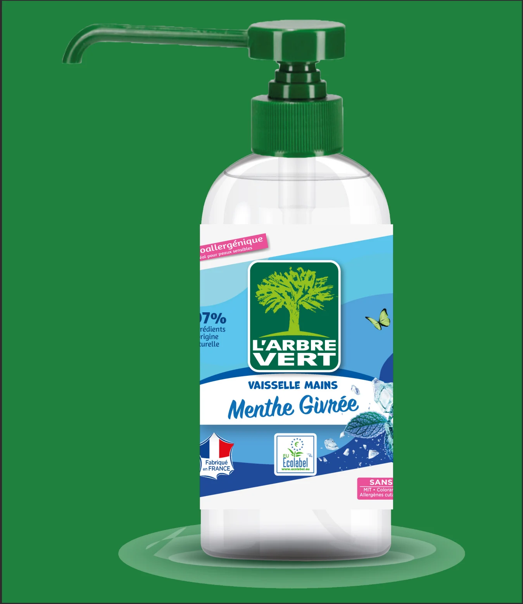
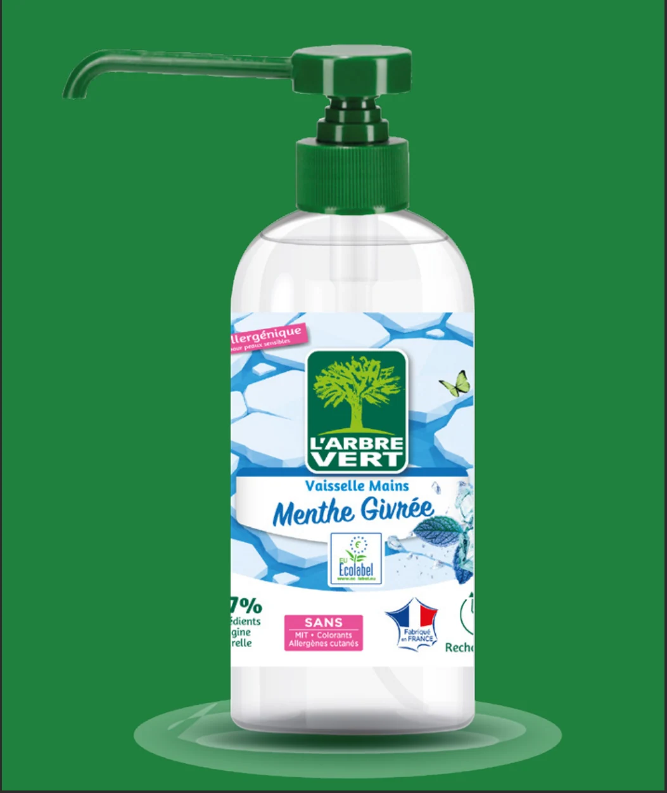
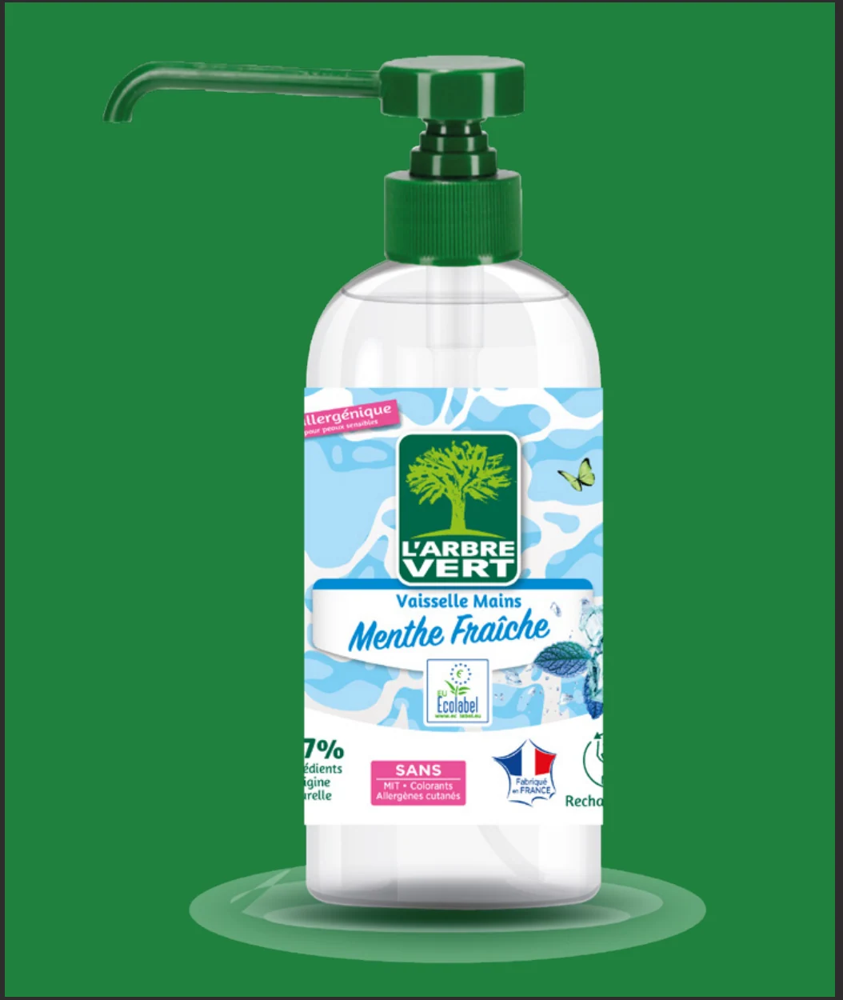

Calanques
Création d’une étiquette pour L’Arbre Vert.

La mission fut de proposer des concepts pour un produit vaisselle-mains à la menthe fraîche. Il fallait proposer le nom et le design.
Les contraintes étaient la dimension de l’étiquette, le packaging, les icônes et la couleur principale, le bleu. Il fallait aussi moderniser légèrement l’identité de L’Arbre Vert tout en gardant son esprit d’origine. Une de mes productions fut choisie comme inspiration pour la version finale.

